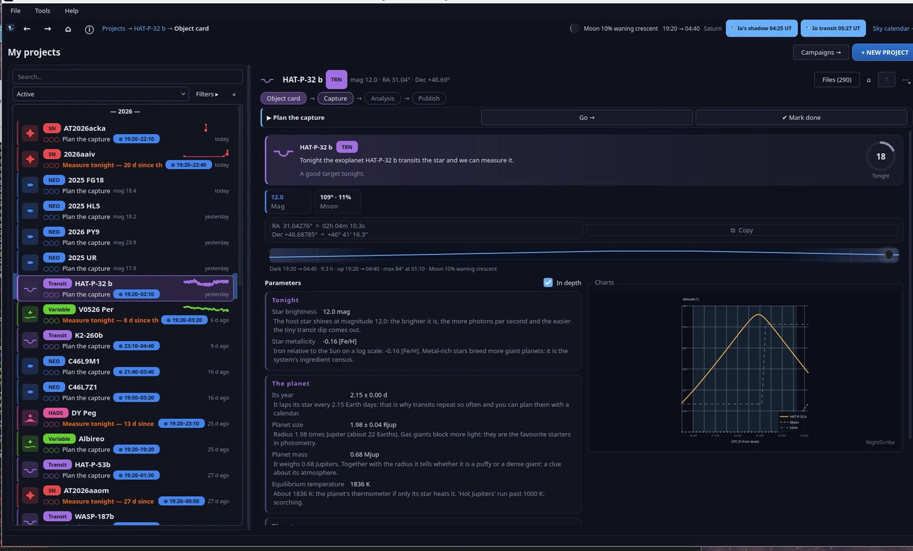

Projects

A project is NightScribe's unit of work: one specific object you want to observe, with its own folder, visits, measurements and outcome. Everything you do with it (captures, light curves, reports, posts) hangs from the project, so weeks later you can pick it up without rebuilding anything.
Creating a project
Three paths, and all of them lead to the Tonight view (chapter 02):
+ NEW PROJECT, in the window header.
Create a project from tonight's targets, in the night panel of My projects.
+ New project…, in the project list.
From the Tonight view you pick the target (a suggested card, a table row, or the search bar with Create by hand… for what is not in any catalogue, such as a variable from your own programme). The project is born with everything the app already knows: coordinates, visibility window, magnitude and exposure plan.
The four steps
Every project walks through four guided steps; the app tells you which one is due and the Go → button takes you to the exact tool:
Card: what the object is and why it matters. Orbital and physical parameters translated into plain language, visibility from your site and observing recommendations (maximum exposure before a NEO trails, for instance).
Capture: launch the frames (straight onto CCDciel, chapter 05) or register the ones you already took.
Analysis: this is where visits live (each observing night is a visit) along with their resources: the FITS plates, photometry, astrometry, the comparison chart. Chapters 06 and 07 go into detail.
Publishing: the bilingual post draft and the charts (chapter 08).
When a step is complete, ✔ Mark done marks it and the project moves on.
Why steps and not a tool drawer? Because order matters: measuring photometry before calibrating produces pretty, false numbers. The steps do not lock you in (you can open any tool at any time), but they make it hard to skip the physics by accident.
The project list
In My projects you have search, filters by type/tag/campaign and three views: Active, Done and Archived. Two details you will use daily:
☆ Favourites first: pins to the top what you are following closely.
"Needs you": the landing panel summarises which projects need you and why ("5 days without measuring this variable and its period is 0.3 days", "this SN is fading: last useful shot this week").
Why an "attention" panel? Because scientific follow-up is a cadence problem, not a memory problem: a light curve with gaps in the wrong places loses the period or the maximum. The panel computes locally, with no network, which project loses value with each passing day, and puts it in front of you before you plan the night.
The target kinds, in one sentence each
NEO: an asteroid or comet near Earth; the value lies in the astrometry for its orbit (chapter 07).
PCCP: a candidate on the MPC confirmation page; your measurement may be the one that confirms it.
Comet: activity tracking and real magnitude versus the predicted one.
Supernova: light curve against the templates of its type and a confirmation blink against the reference image.
Exoplanet transit: the transit curve; NightScribe prepares the EXOTIC handoff and the ExoClock submission.
Variable (including HADS, high-amplitude δ Scuti stars): photometric series, period search and folded curve.
Alert: one-off targets (outbursts, AAVSO calls).
The observing journal
Tools → Observing journal shows your history by night: what you observed, how many frames, with which filter, and what came out of it. It builds itself from your projects and visits: the night you captured something great stays written down even if you forgot to log it.
Next: 04. Campaigns and vigils.